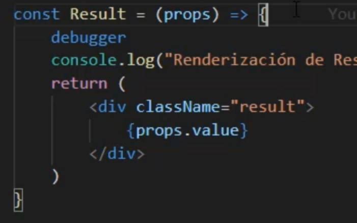
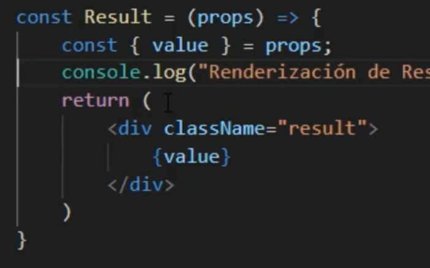
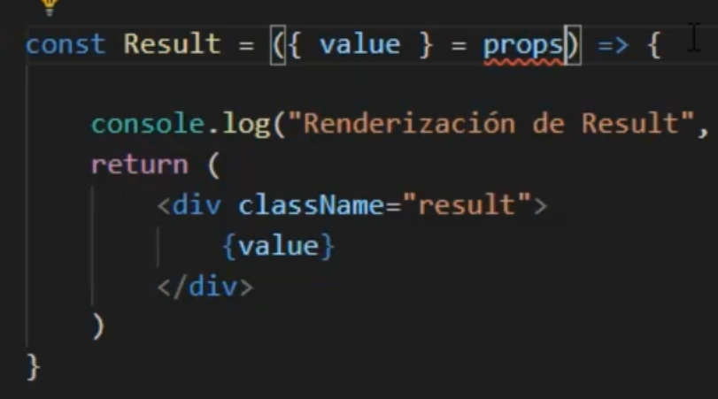
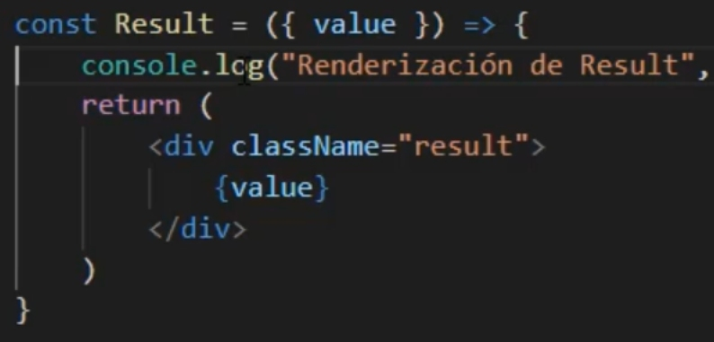
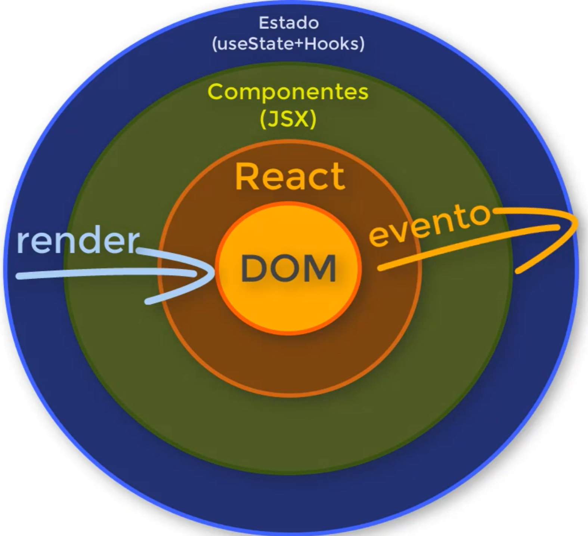

1. index.html tiene un <div id="root"></div>
2. index.jsx tiene un ReactDOM.render (DOM es para que funcione bien en HTML) que en el segundo parámetro indica el elemento en HTML que va a modificar -> getElementbyId('root')
3. El primer parámetro del ReactDOM.render llama a la Componente App.jsx que hemos creado.
4. App.jsx contiene la estructura de la página y llama a las Componentes. (Result.jsx en el ejemplo)
5. Creamos Componentes en archivos .jsx. (Result.jsx en el ejem
Se renderiza desde el padre hacia los hijos.
index.html -> index.jsx -> App.jsx -> Result.jsx
Por tanto los valores se envían de padres a hijos
1. Creamos un archivo .jsx para componente.
2. El nombre del archivo de un componente empieza siempre por mayúscula.
3. <App></App> es lo mismo que <App />
4. Cuando importamos un archivo jsx no se pone la extension.
Ejemplo: import App from './App'5. Cuando importamos un archivo css SI HAY que poner la extension
Ejemplo: import './App.css'En App.jsx, en el return, cuando tenemos más de una línea debemos meter todo entre paréntesis.
Patrón SOLID
S: Single Responsibility: Cada Componente tiene una única funcionalidad.
Los parámetros de las funciones dentro de las Componentes se dan desde el llamador(padre) del Componente.
1. Las componentes se comunican mediante propiedades.
2. Las propiedades de los componentes se definen donde se usan los componentes (las propiedades de Result.jsx se definen en App.jsx).
3. El componente reciba la información desde donde se le llama (Result.jsx recibe los parámetros desde App.jsx).
Creamos una carpeta en el que metemos el archivo jsx y el css correspondiente
Al cambiar los dos archivos a una nueva carpeta, cuando se llama al jsx en otro componente nos dará error.
Para corregirlo, renombramos el archivo jsx a index.jsx.
De esta manera, cuando en la importación del componente está escrito
import from './Button'
primero buscara un componente en la propia carpeta que se llame Button.jsx o .js
y si no lo hay, buscará una carpeta que se llame Button, y si la encuentra, buscará un archivo index.jsx y lo usará como si fuese el original Button.jsx
import React from 'react' ya no es necesario incluirlo
Para saber si un Componente instaladao se importa usando llaves o no, depende de cómo se exportó el componente en la librería que utilizamos.
Lo que se importa por defecto no necesita llaves.
Los componentes internos importados por separado necesitan llaves.
Tip: La forma de saber exactamente cómo importar los componentes de una librería cualquiera es revisando su documentación en npm o en su página web.
Usamos PropTypes para hacer una comprobación de que a los componentes les llegan los parámetros que queremos.
Desde la carpeta del proyecto:
npm prop-types
"dependencies" ->"prop-types": "^15.7.2"
^ quiere decir que el número más a la derecha (2 en este caso) se irá actualizando automáticamente
Comprobar que la carpeta prop-types esta dentro de node_modules
import PropTypes from 'prop-types'
fuera del const del Componente, se escribe (estamos comprobando la propiedad value y que se le da un valor tipo string):
Result.propTypes (propTypes forma parte del componente) = {
value: PropTypes (PropTypes es la libreria) .string (tipo de valor que debe tener value) .isRequired (con esto decimos que si a Result no le llega la propiedad value incurriremos en un error)
}
Para dar un valor por defecto a la propiedad en caso de que no se le entregase ningun valor desde su padre:
Result.defaultProps = {
value: "0"
}
En JSX para asignar una clase CSS a un elemento HTML debemos usar className en lugar de class.
Cuando necesitamos invocar código JS dentro de código JSX debemos poner llaves {}
En JSX están disponibles TODOS LOS ELEMENTOS DE HTML.
Desde Console:
si tenemos un objeto:
const person={
id:1,
name:Juan,
nick:Juan1
}
para saber el id necesitariamos escribir:
console.log(person.id)
Pero si lo desestructuramos haciendo:
const {id, name, nick}=person; (No es necesario meter todas las propiedaddes, solo las que nos interesen)
después, para acceder a una propiedad, solo necesitamos escribir:
console.log(id)
Aplicado a las propiedades de las Componentes:
Esto:  es lo mismo que esto:  que es lo mismo que esto:  que es lo mismo que esto (será el que usemos): 
Se usan desde la version 16.8 de REACT
useState retorna:
1 una variable (estado) y
2 una función que permite modificar el estado.
Se suele utilizar Array Destructuring para sus valores de retorno:
a)
const array = funcionQueRetornaUnArray()
const primerElemento = array[0]
const segundoElemento = array[1]
b)
const [ primerElemento, segundoElemento ] = funcionQueRetornaUnArray()
Para importarlo:
import {useState} from 'react'
const arrayTextoFuncionModificaTexto = useState("")
//arrayTextoFuncionModificaTexto => ["", funcion]
//1er posición: valor (que inicialmente es el valor por defecto)
const texto = arrayTextoFuncionModificaTexto[0]
//2da posición: función que me va a permitir modificar el valor por defecto
const funcionModificaTexto = arrayTextoFuncionModificaTexto[1]
si hacemos funcionModificaTexto("number") y clickamos en el número 5 ->
funcionModificaTexto("5")
->
arrayTextoFuncionModificaTexto[0] = 5
o lo que es lo mismo
texto=5
y esto es lo que muestra Result en value={texto}
ARRAY DESTRUCTURING
Lo anterior podemos escribir como
const [texto, funcionModificaTexto] = useState("")
Por convencion, a la función se le pone el nombre de la variable predecidio de set. Nos quedaría:
const [texto, setTexto] = useState("")
En el ejemplo de la Calc-App cambiamos texto por stack
const [stack, setStack] = useState("")
Necesitamos usarlo cuando se generan listas de forma dinámica
Es utilizado por React para identificar qué elementos han cambiado, se agregan o se eliminan de la lista generada (RECONCILIATION)
Las claves pueden ser de cualquier tipo (numero, string, objeto...)
Las claves deben ser únicas entre los elementos hermanos.
Las claves deben ser estables entre renderizaciones.
Claves que se determinen según la fecha o según índice NO ES BUENA PRÁCTICA.
Las claves deben ser un valor propio de lo que estamos renderizando.
añadir las lineas
"emmet.triggerExpansionOnTab": true,
"emmet.includeLanguages": { "javascript":"javascriptreact" }
Si escribe solo .clase
y presiona TAB el resultado será
<div className='clase'></div>
y si escribe .numbers>button{$}*5 el resultado será
<div className="numbers">
<button>1</button>
<button>2</button>
<button>3</button>
<button>4</button>
<button>5</button>
Para usar VARIOS CURSORES A LA VEZ
Alt+varios clicks
Ctrl+F2 para seleccionar todas las ocurrencias de la palabra
Ctrl+Shift+L para seleccionar todas las ocurrencias de la selección
en HTML5 se puede cambiar div por section
1. Cuando tenemos un sólo parámetro en la función podemos eliminar los paréntesis:
(text) => ....
text => ....
2. Cuando el cuerpo de la funcion tiene una sola linea podemos eliminar {}
3. Cuando el cuerpo de la funcion solo tiene un return (sin otros elementos a su mismo nivel) y éste se encuentre al inicio de la función, podemos: eliminar la palabra return y eliminar las llaves de la función.
El objetivo de map es tomar un array como origen, procesarlo, y obtener un array destino.
El array original no es modificado
Ejemplo1: Multiplicar por 2 cada uno de los elementos de un array.
var array=[1,2,3,4,5]
array.map(item => item*2)
Ejemplo2: Añadir "hola" a cada elemento del array
var array=[1,2,3,4,5]
array.map(item => "hola" + item)
BURBUJEO es cuando un valor sube desde las capas inferiores (hijos) hasta las capas superiores (padres) hasta llegar hasta App.jsx
Cuando hay muchos niveles, se usa REDUX para disminuir problemas al subir capas.
JQUERY sirve para comunicar los eventos generados por html con JS
React intercede para que no haya cambios en el DOM (html) si no hay cambios en el Estado.
Cuando en el DOM hay algún elemento visual (p.e. un button) que escucha un Evento (p.e. onClick) alteramos alguna parte de nuestro Estado (p.e. una propiedad).
Entonces ante un nuevo Estado se genera un JSX diferente, y este es tratado por React y decide si vuelve a modificar el DOM o no.
Es una Libreria muy utilizada.
Instalamos la funcion words
npm install lodash.wordsimport words from 'lodash.words'
Con esto, separamos la cadena que hay en stack por los signos de operacion, creando un array en la que cada elemento son los numeros que hay entre cada operacion
const items = words(stack, /[^-^+^*^/]+/g)Se escribe la concatenación de string entre ` ` y escribiendo las variables dentro de ${ }
var name = "emiliano"
var greeting = `Hola ${name}!`
en la calculadora, hace los calculos a partir del String
eval can be harmful, hay que intentar evitarla
es una herramienta que analiza el código fuente para marcar errores de programación, errores, errores estilísticos y construcciones sospechosas
eslint es la version de JavaScript de linter
escribiendo al inicio del .jsx
/* eslint no-eval:0*/
desaparece el warning
1º Hacerse cuenta en GitHub
2º Descargar Git
3º en GitHub -> crear repositorio
4º Abrir Git CMD
5º en CMD vamos a la carpeta del proyecto
6º Inicializamos el git
git init
7º Agregamos el proyecto al repositorio
git add -A
8º Comprobamos el status
git status
9º Hacemos commit para inicializar la version
git commit -m "version 1"
10º Vincular el repositorio que tenemos localmente con el repositorio que está creado en github
git remote add origin {link desde github}
11º Enviar lo que tenemos localmente hacia el repositorio externo
push -u origin master
12º Para agregar cambios
git add -A
git commit -m "version 2"
git push origin master
1º npm install -g serve
-g es para instalaciones globales, no en el node_modules local)
2º npm run build
Crea archivos comprimidos del proyecto.
Estos archivos se guardan en la carpeta build.
3º serve -s build
Nos abrirá un servidor local para ver cómo funciona en nuestra máquina.
Esto se puede sustituir por Apache o NGInx, que son servidores web utilizados en ambientes de producción.
Página web dinámica con PHP:
Cuando hay algun cambio desde el cliente (browser) toda la página viaja al servidor, se hacen todos los cambios y la página entera vuelve al cliente.
Página web estática:
Cuando trabajamos con a Single Page App (React), el index.html contiene in div id="root" que contiene el resto de la aplicación.
Entonces una vez que viaja el index.html solicita al server los archivos estáticos que fueron generados en el paso 2º.
Entonces los archivos jsx y css viajan a el cliente.
Por tanto, después de la carga inicial ya no hay más necesidad de comunicación con el server.
firebase init
YesSi lo anterior falla, ir a
Firebase Console
y crear el proyecto desde ahí. Después, volver a
firebase init y seleccionar
use an existing project
firebase use --add
(Le damos un alias al proyecto)
react-calculator
{kind=link}
{kind=link}
{kind=link}
{kind=link}